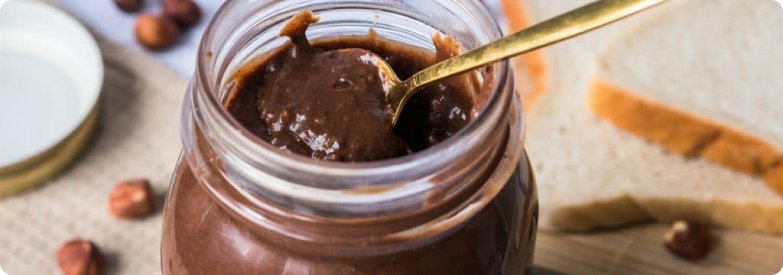

Marmitoux
Rechercher
Connexion
Pâte à crêpes
Pâte à tartiner noisette
Jus de fruits

Recette de la pâte à tartiner
Olivia Condova
Training cooker
Avis
(128)
Incredients
- 110g de lait concentré
- 50g de poudre de noisette
- 1 cueillère à soupe d’huile
- 40g de chocolat noir
- 20g de chocolat au caramel
- 10g de beurre
Instructions
-
Faire fondre le chocolat : Faire fondre le chocolat avec le beurre au
micro ondes à faible puissance
-
Ajouter le lait concentré sucré et les noisettes : Dans un saladier
mélangez le lait concentré sucré, les noisettes en poudre, le chocolat
noir et le beurrre fondu. Mélangez bien.
-
Mélanger emplement : Mélanger fort pour obtenir une texture plus fine.
-
Déguster : Goûter à l’aide d’une cuillère et servir avec les crêpes.